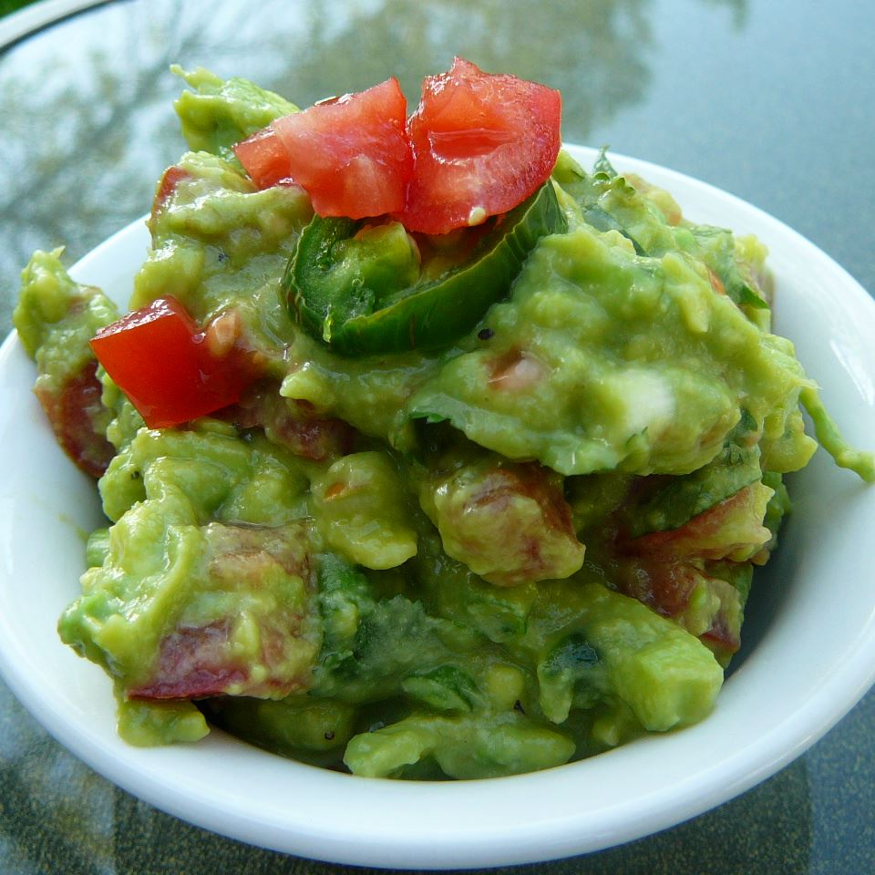

Traditional Mexican Guacamole

Description
Ingredients
- 2 avocados, peeled and pitted
- 1 cup chopped tomatoes
- 1/4 cup chopped onion
- 1/4 cup chopped cilantro
- 2 tablespoons lemon juice
- 1 jalapeno pepper, seeded and minced (Optional)
- salt and ground black pepper to taste
Steps
- Mash avocados in a bowl until creamy
- Mix tomatoes, onion, cilantro, lemon juice, and jalapeno pepper into mashed avocado until well combined;
season with salt and black pepper
--Home Page--